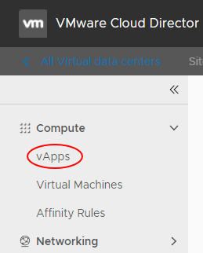

How to securely manage permissions for a specific vApp
Overview
This article shows you how to extend permissions to users for specific vApps, while ensuring that those users cannot access other vApps or settings.
Prerequisites
You must be able to log in to the UKCloud Portal as an administrator to perform the steps in this guide. If you do not have the appropriate permissions, contact your administrator.
For each user to whom you want to grant permissions on the vApp, you need the VMware Cloud Director user ID. Users can obtain their user ID as follows:
Log into the Portal as the appropriate user.
Click the drop down list in the top right of the Portal pane and click API.

For the compute service to which the vApp belongs, make a note of the Username.

Setting VMware Cloud Director permissions in the UKCloud Portal
Log in to the UKCloud Portal as an administrator.
If necessary, select the account to which the vApp belongs.
In the navigation panel, expand the Contacts option and select All Contacts.

Edit the users to whom you want to grant permissions and ensure that, in the Permissions for UKCloud for VMware section of the Permissions tab, only the vApp User option is selected for the compute service to which the vApp belongs.

You can also create new users if required.
Managing permissions for a vApp
To manage permissions for a specific vApp:
In the VMware Cloud Director Virtual Data Center dashboard, select the VDC that contains the vApp.
In the left navigation panel, select vApps.

In the card for the vApp, click Details.
Select Sharing then Edit.
In the Share dialog box, from the Share with radio buttons, select Specific Users and Groups.

For each user to whom you want to grant permissions:
Select the check box for the user.
From the Access Level list, select the appropriate permission level:
Read Only - View the VMs in the vApp but make no changes
Read/Write - View and make changes to the VMs in the vApp; create new VMs
Full Control - View, edit and create VMs; change permissions of other users

When you're done setting permissions for all users, click Share.
Feedback
If you find a problem with this article, click Improve this Doc to make the change yourself or raise an issue in GitHub. If you have an idea for how we could improve any of our services, send an email to feedback@ukcloud.com.